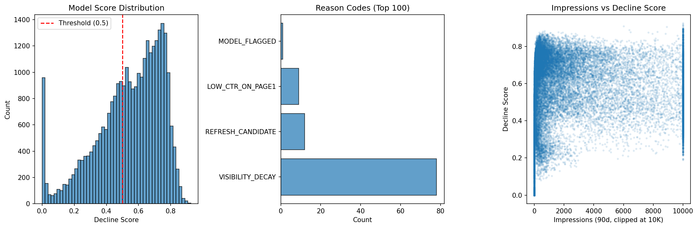

Content teams managing large SEO portfolios need a way to prioritize which pages to refresh, but manual triage does not scale. We trained a Random Forest classifier on 30,000 content items across 32 clients to predict whether a page is in a declining trend, using traffic, position, and staleness features. On a client-grouped holdout set, the model achieved precision@50 of 58% (base rate 54.2%) and AUC of 0.61 — a modest 3.8-point lift over random selection. A simpler Logistic Regression outperformed the forest (precision@50 = 74%), contradicting the hypothesis that non-linear interactions matter for this task. Cross-validation across five client groups showed high variance (70.8% ± 18.4%), indicating the model is fragile across different client portfolios. We conclude that while the model provides a directional signal for triage, it is not production-ready: the lift is small, the signal is dominated by a single feature (average position), and the model is descriptive rather than predictive. This paper presents the full validation audit, including leakage checks, honest claim rewrites, and a practical action playbook with human-review guardrails.
Managing a large content portfolio means making hard choices about where to invest limited refresh budget. A team overseeing 30,000 content items cannot manually review every page each quarter. The obvious question: can a machine learning model rank pages by their likelihood of declining, so humans can focus their attention on the most promising candidates?
This matters because the cost of inaction is real. Pages that were once visible can decay quietly, losing impressions and clicks over months. But refreshing the wrong pages wastes expert time that could be spent elsewhere. A good triage tool would let the team focus on pages where a refresh is most likely to matter.
We built a classifier to answer this question. What we found is more nuanced than a simple "yes" or "no." The model provides a weak but real signal — enough to be a starting point for human review, but not enough to automate decisions. This paper tells the honest story of what we built, what it can do, and where it stops being useful.
We used the FlyRank ML Internship Starter Dataset, a pseudonymized collection of content performance data. The dataset contains 30,000 rows — one per content item — across 32 anonymized clients, with trailing-90-day metrics from Google Search Console and Google Analytics 4.
| Property | Value |
|---|---|
| Total rows | 30,000 |
| Unique clients | 32 |
| Columns | 44 (traffic, position, engagement, content metadata) |
| Label | trend_direction ("down" = declining, 54.2% base rate) |
| Filter applied | impressions_90d > 0 AND content_age_days >= 90 |
| Rows after filter | 30,000 (all rows pass) |
content_id to avoid double-counting.All client identifiers are pseudonymized. No private URLs, query strings, or real client names appear in this paper or the accompanying code. Rate columns (CTR, engagement rate, scroll rate) are stored as percentages (e.g., ctr = 0.76 means 0.76%, not 76%). The column avg_position = 0 means "no data," not rank zero.
The label is_declining is derived from trend_direction, which is computed from a 30-day trend comparison of impressions. A page is labeled "declining" if its recent 30-day impressions are trending downward. This is a current-state label, not a future prediction.
We used 26 features: 18 numeric (impressions, clicks, sessions, position, CTR, content age, staleness, word count, etc.) and 8 categorical (competition level, content type, intent, age tier, impression tier, etc.). All numeric columns were filled with 0 for NaN; categoricals were filled with "unknown."
A Random Forest classifier (200 trees, max depth 10, min samples leaf 20) was the primary model. A Logistic Regression (max iterations 5000) was trained for comparison.
client_id, so every row from a given client is entirely in train or entirely in test.
trend_direction and trend_pct are excluded from features.avg_position drops precision@50 to 50% (base rate) — no collapse, but the model depends heavily on this single feature.| Method | P@10 | P@20 | P@50 | AUC |
|---|---|---|---|---|
| Base rate (majority class) | 51.1% | 51.1% | 51.1% | — |
| Logistic Regression | 90.0% | 75.0% | 74.0% | 0.6092 |
| Random Forest (holdout) | 50.0% | 65.0% | 58.0% | 0.6087 |
| Random Forest (5-fold CV) | — | — | 70.8% ± 18.4% | — |
Finding 1: The simpler model wins. Logistic Regression (linear) outperforms Random Forest (non-linear) on precision@50 (74% vs 58%). This contradicts the hypothesis that non-linear interactions between staleness and content type are important for this task. The signal in these features appears to be approximately linear.
Finding 2: The model is fragile across clients. Cross-validation shows a mean precision@50 of 70.8% but a standard deviation of 18.4%. Fold 5 (8 clients held out) achieved only 40% — barely below the base rate. The model's performance depends heavily on which clients happen to be in the test set.
Finding 3: One feature dominates. Average position accounts for the largest share of feature importance (built-in: 0.124, permutation: 0.130). Removing it drops the model to base rate. The model is effectively a position-based ranker, not a multi-signal decline detector.
Finding 4: The lift is modest. On the holdout set, the model flags declining content at 58% in the top 50, compared to 51.1% if content were selected at random. The 6.9-point lift is directionally positive but fragile.

| Feature | Built-in Importance | Permutation Importance |
|---|---|---|
days_with_impressions | 0.163 | 0.010 |
log_impressions_90d | 0.160 | 0.012 |
avg_position | 0.124 | 0.130 |
content_age_days | 0.109 | 0.003 |
word_count | 0.054 | 0.001 |
Permutation importance confirms avg_position as the dominant signal. Built-in importance over-weights days_with_impressions and log_impressions_90d due to their correlation with position.
The model produces a ranked queue of 100 content items for human review. Each item is assigned a reason code indicating why it was flagged. The queue is a triage tool, not a decision engine — every item requires GSC verification before action.
| Code | Meaning | Human check |
|---|---|---|
VISIBILITY_DECAY | High impressions (1K+) + declining trend | Check GSC for position drops |
STALE_CONTENT | No update in 180+ days | Are stats and dates current? |
LOW_CTR_ON_PAGE1 | Position 1–10 but CTR < 0.5% | Is the title/meta compelling? |
REFRESH_CANDIDATE | 500+ impressions + 90+ days stale | High-value refresh target |
THIN_CONTENT | <1K words + 100+ impressions | Does this page need depth? |
MODEL_FLAGGED | Score above threshold, no rule match | General review needed |
All code, data, and outputs are publicly available. To reproduce this work:
# Clone the repository
git clone https://github.com/ganeshpnsb/ML-INTERNSHIP.git
cd ML-INTERNSHIP
# Install dependencies
pip install pandas numpy scikit-learn matplotlib jupyter
# Run the notebooks in order
jupyter notebook work/notebooks/w05_model.ipynb
jupyter notebook work/notebooks/w06_validation_audit.ipynb
jupyter notebook work/notebooks/w07_action_playbook.ipynb| Notebook | Purpose |
|---|---|
w05_model.ipynb | Model training and evaluation (RF, LR, GroupKFold CV) |
w06_validation_audit.ipynb | Leakage audit, paper methodology review, claim rewrites |
w07_action_playbook.ipynb | Ranked queue generation, reason codes, exports |
| File | Location |
|---|---|
| Ranked action queue | work/outputs/content_action_queue.csv |
| Full scored dataset | work/outputs/full_scored_dataset.csv |
| Playbook metrics | work/outputs/playbook_metrics.json |
| Overview figure | work/figures/playbook_overview.png |
Random seed: random_state=42 for all models. Results are deterministic given the same data and seed.
This research was built on the FlyRank ML Internship Dataset, a pseudonymized collection of content performance data from Google Search Console and Google Analytics 4. We gratefully acknowledge FlyRank for making this dataset available for research and educational purposes.
The dataset contains 30,000 content items across 32 anonymized clients, with trailing-90-day metrics including impressions, clicks, sessions, position, CTR, engagement rate, and content metadata. The accompanying research paper, The State of AI-Driven SEO in Numbers (FlyRank, March 2026), provides the broader portfolio context that informed our methodology choices.